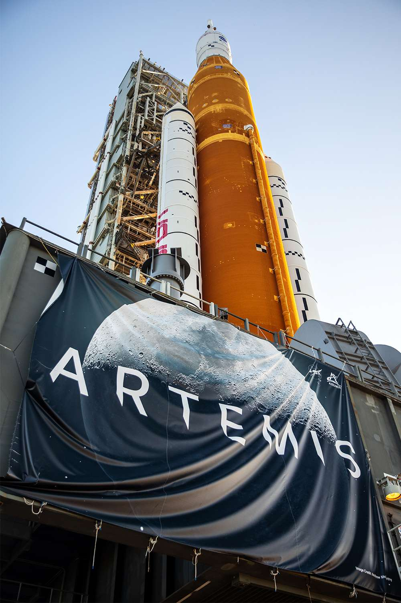
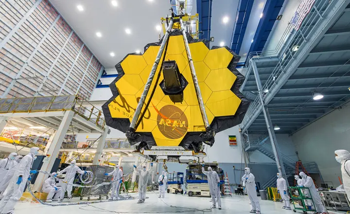
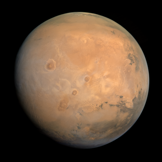
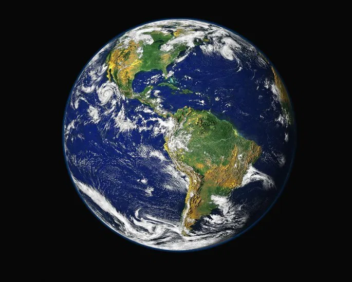
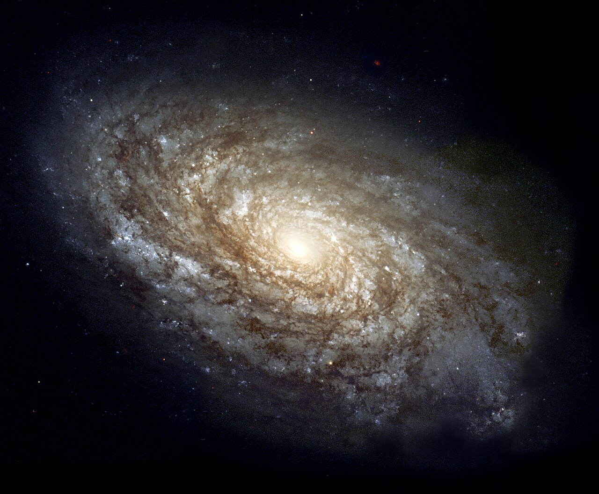
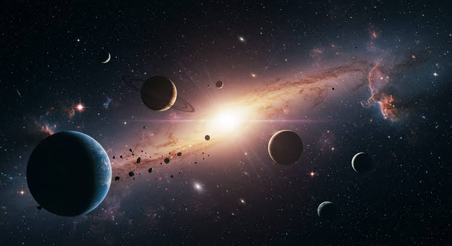

Nesta página você acompanha as principais novidades da NASA, incluindo missões espaciais, descobertas científicas, imagens do Telescópio James Webb e avanços na exploração do Sistema Solar. Conheça os projetos que estão ampliando nosso conhecimento sobre o universo e aproximando a humanidade de futuras missões à Lua e a Marte.

Missão Artemis II
A Artemis II será a primeira missão tripulada do programa Artemis, preparando o retorno dos astronautas à Lua.

James Webb
O telescópio James Webb registrou novas imagens de galáxias e nebulosas com detalhes impressionantes.

Exploração de Marte
O rover Perseverance continua analisando o solo marciano em busca de sinais de vida antiga.

Observação da Terra
Satélites monitoram incêndios, furacões, desmatamento e mudanças climáticas em todo o planeta.

Novo Lançamento
A NASA realizou com sucesso mais um lançamento para colocar equipamentos científicos em órbita.

Vida no Espaço
Astronautas realizam experimentos na Estação Espacial Internacional para melhorar futuras missões.

Novas Galáxias
Cientistas descobriram novas galáxias graças às imagens captadas pelo Telescópio James Webb.

Sistema Solar
Estudos recentes ajudam a compreender melhor a formação dos planetas e a origem do Sistema Solar.

Base Lunar
A NASA continua desenvolvendo tecnologias para estabelecer uma presença humana sustentável na Lua, servindo como preparação para futuras missões tripuladas a Marte.